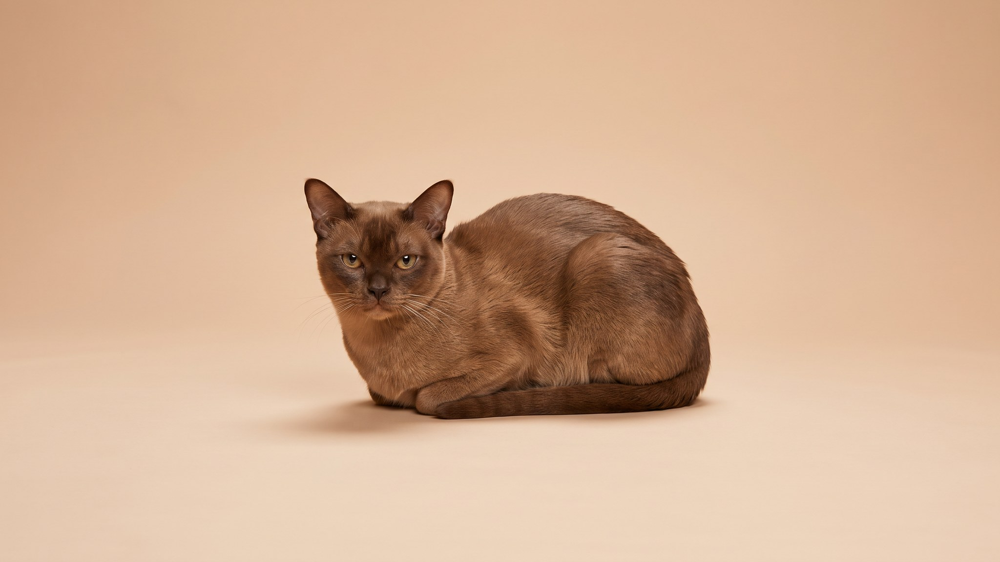

Кошка мандалай обычно охотно включается в подвижную игру рядом с человеком, поэтому случайные короткие броски игрушки весь вечер поддерживают возбуждение. Полезнее заранее задать время активности и спокойный финал. В статье собраны распорядок дня, последовательность вечерней игры и чек-лист признаков подходящей нагрузки.
🐾 Всё о вашем питомце — в одном приложении
AI-ветеринар, дневник здоровья, напоминания об уходе и прививках. Бесплатно, в Telegram и MAX.
Установить AnimaLife → Открыть в MAX →
У вас iPhone? AnimaLife есть в App Store
Мандалай относится к бурманскому типу кошек, для которых характерны контакт с человеком и интерес к занятиям. Конкретная потребность в активности зависит от возраста, здоровья и привычек животного. Поэтому ориентируйтесь на поведение своей кошки: просит ли она игру, быстро ли успокаивается после неё, сколько времени спит днём.
Оставьте две короткие игровые серии на светлое время суток. Одну проведите утром, другую днём или сразу после вашего возвращения домой. Между ними кошке нужны сон, доступ к наблюдательной точке у окна и самостоятельные занятия без проводов и мелких деталей. Вечернюю серию планируйте примерно за час до привычного отхода ко сну.
Ночное возбуждение часто начинается с пустого дня. Если кошка почти всё светлое время провела во сне, поздняя игра вряд ли заменит дневную активность. Переносите часть занятий раньше, а вечером оставляйте предсказуемую завершающую серию.
Подготовьте удочку с прочной приманкой, одну игрушку для независимой игры и порцию привычного корма по режиму. Освободите проход между мебелью, уберите пакеты и предметы, которые кошка может сбить. Для первого ориентира возьмите занятие на десять минут и скорректируйте его по наблюдениям.
Завершение с поимкой снимает недосказанность охоты. Резкое исчезновение игрушки на пике погони чаще приводит к поиску новой цели. Если мандалай продолжает бегать после финала, следующую серию сделайте проще и перенесите её начало раньше.
Через несколько дней сравните поведение до и после занятия. Подходящая нагрузка заканчивается спокойным умыванием, кормлением или отдыхом. Кошка может некоторое время наблюдать за комнатой, затем выбирает место для сна. Ей не нужно сразу ложиться по команде.
Если кошка мандалай каждую ночь бегает, зовёт человека или хватает его за ноги, проверьте дневной сон и число активных занятий. Резкая смена привычного поведения, беспокойство вместе с изменением аппетита или необычная вокализация требуют консультации ветеринара. Записи за неделю помогут отличить сбой режима от нового состояния животного.
🐾 Спросите AI-ветеринара о вашей кошки
AnimaLife отвечает на вопросы о кошках и собаках круглосуточно, ведёт дневник здоровья и напоминает о прививках. Бесплатно, без записи.
Открыть AnimaLife → Открыть в MAX →
У вас iPhone? AnimaLife есть в App Store
🐾 Понравился разбор?
Подпишитесь на канал — каждый день разбираем по одному тревожному симптому у кошек и собак: что в пределах нормы, а когда пора к врачу. Подпишитесь, чтобы не пропустить разбор, который может спасти здоровье вашего питомца.
Материал носит информационный характер и не заменяет очную консультацию ветеринара.